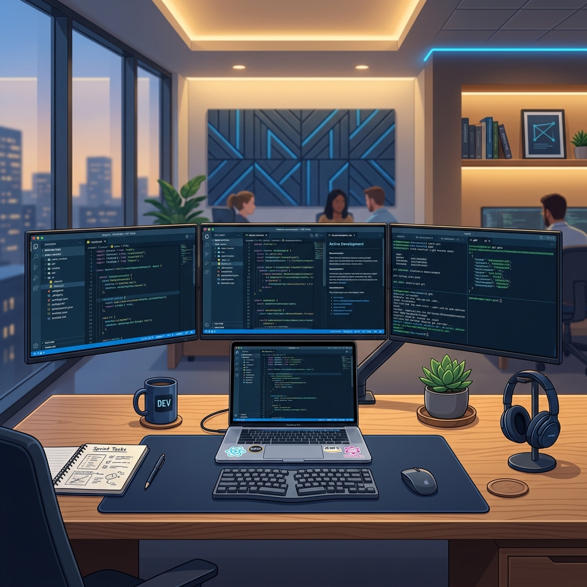

Über mich — Maximilian SchenkAbout Me — Maximilian Schenk
Ich bin 24 Jahre alt und wohne in Bonn. Aktuell mache ich meine Umschulung zum Fachinformatiker für Anwendungsentwicklung. Dieses Portfolio dient dazu, meinen Werdegang, meine Umschulungsinhalte und meine Programmierprojekte vorzustellen.
I am 24 years old and live in Bonn. I am currently undergoing retraining as an IT Specialist in Application Development. This portfolio highlights my career journey, retraining modules, and programming projects.
Was ist ein Fachinformatiker?What is an IT Specialist?
Quelle: Berufe.net, aktualisiert: 11. April 2024Source: Berufe.net, updated: April 11, 2024

Aufgaben und Tätigkeiten:Tasks and Activities:
Fachinformatiker/innen der Fachrichtung Anwendungsentwicklung entwickeln und programmieren Software für den eigenen Betrieb oder für Kundenunternehmen. Beispielsweise erweitern sie betriebseigene Programme oder entwickeln neue Lösungen, die auf die eigenen betrieblichen Bedürfnisse bzw. die Kundenanforderungen zugeschnitten sind.
IT specialists in application development design and program software for their own company or for clients. For example, they expand internal programs or develop new solutions tailored to specific business needs or client requirements.
Sie installieren Softwareanwendungen, nehmen sie in Betrieb und weisen ggf. die Anwender in die Bedienung ein. Auch die regelmäßige Aktualisierung und Wartung, der IT-Support, ggf. auch Beratungsleistungen, z.B. bezüglich Fragen der IT-Sicherheit, können zu ihrem Aufgabengebiet gehören.
They install software applications, deploy them, and train users. Regular software updates, maintenance, IT support, and consulting services (e.g., regarding IT security questions) can also fall within their scope of work.
Berufsförderungswerk Dortmund BFW
Quelle: Wikipedia, aktualisiert: 11. April 2024Source: Wikipedia, updated: April 11, 2024
Was ist ein Berufsförderungswerk?What is a Berufsförderungswerk (BFW)?
Es gibt in Deutschland 28 Berufsförderungswerke an zahlreichen Standorten. Sie bilden ein flächendeckendes Netzwerk für Arbeit und Gesundheit. Ihr oberstes Ziel ist es, Menschen mit gesundheitlichen Einschränkungen nach Krankheit oder Unfall auf ihrem Weg zurück ins Arbeitsleben zu begleiten. Sie arbeiten eng mit den Reha-Trägern wie Deutscher Rentenversicherung und Berufsgenossenschaften sowie Kooperationen mit der Agentur für Arbeit.
There are 28 vocational retraining centers (Berufsförderungswerke) in Germany. They form a nationwide network for health and labor. Their primary goal is to guide people with health limitations after illness or accident back into the workforce. They coordinate closely with rehabilitation sponsors like the German Pension Insurance, trade associations, and the Federal Employment Agency.
Zu den Ausbildungen gehören diverse Kaufmännische Berufe wie z.B. Bürokaufleute, Industriekaufleute etc, zu den IT Berufe wie Fachinformatiker, Mediengestalter etc und gewerblich-technische Berufe wie Bauzeichner, Zerspanungsmechaniker, Mechatroniker und vieles mehr.
Vocational courses include various business occupations (such as office administrators, industrial clerks), IT occupations (like application developers, media designers), and technical professions (such as draftspersons, machinists, mechatronics technicians).